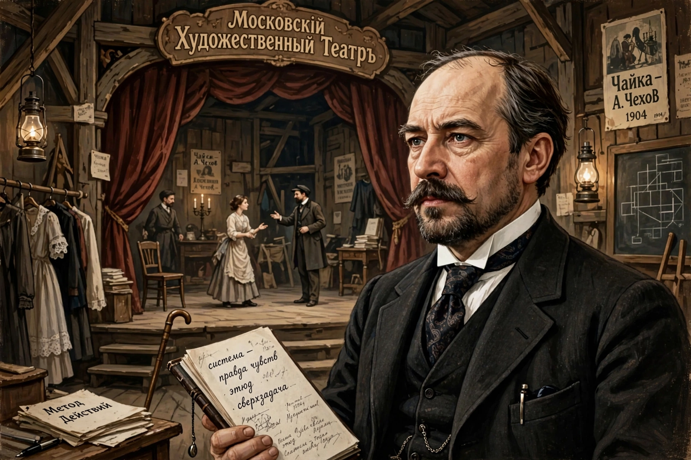

| Konstantin Stanislavski | |
|---|---|
 | |
| Born | 17 January 1863, Moscow |
| Died | 7 August 1938, Moscow |
| Occupation | Actor, theatre director, theorist |
Konstantin Sergeyevich Stanislavski (1863–1938) was a Russian actor and theatre director who co-founded the Moscow Art Theatre in 1898 with Vladimir Nemirovich-Danchenko and developed the influential "system" of actor training.
Reacting against declamatory 19th-century acting, Stanislavski taught actors to pursue psychological truth: given circumstances, objectives and super-objectives, the "magic if," emotional memory, concentration, and ensemble playing. His productions of Chekhov — The Seagull, Uncle Vanya, Three Sisters, The Cherry Orchard — redefined modern staging.
His books An Actor Prepares, Building a Character and Creating a Role shaped Western acting; in America the Group Theatre and teachers such as Lee Strasberg adapted his work into "the Method," while Stella Adler and Sanford Meisner developed divergent strands after meeting him.